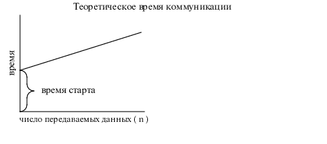

Полное время параллельного алгоритма
Полное время выполнения параллельных вычислений tp является суммой
времени, затраченного на вычисления tcomp, и времени, затраченного на
коммуникации (обмен данных между процессорами)tcomm.
Время вычислений оценивается как время для последовательного алгоритма.
-
tp=tcomp+tcomm
Обозначим время запуска (startup), иногда называемое временем скрытого
состояния сообщений (message latency), как tstartup.
В качестве начальной апроксимации времени коммуникации возьмем:
-
tcomm=tstartup+n * tdata
tstartup - это время, затрачиваемое на пересылку сообщения
"без данных" (посылка нулевого сообщения).
Будем считать его постоянным. tstartup зависит как от оборудования, так и от программного обеспечения.
Вклад времени передачи одного слова данных tdata также будем
предполагать постоянным. Пусть мы передаем от одного процессора к другому n
данных, тогда теоретическое время коммуникаций можно представить в виде следующего графика
tcomm(n):

Для передачи q сообщений, каждое из которых имеет длину n-данных,
потребуется время:
-
tcomm=q(tstartup+n tdata).
Информативной величиной является также отношение вычислительных затрат к коммуникационным:
-
tcomp/tcomm.
Эта дробь дает количественное выражение коммуникационным издержкам по отношению к объему
вычислений.


 [Назад]
[Оглавление]
[Вперед]
[Назад]
[Оглавление]
[Вперед]
Последнее обновление 27.11.2001 WebMaster